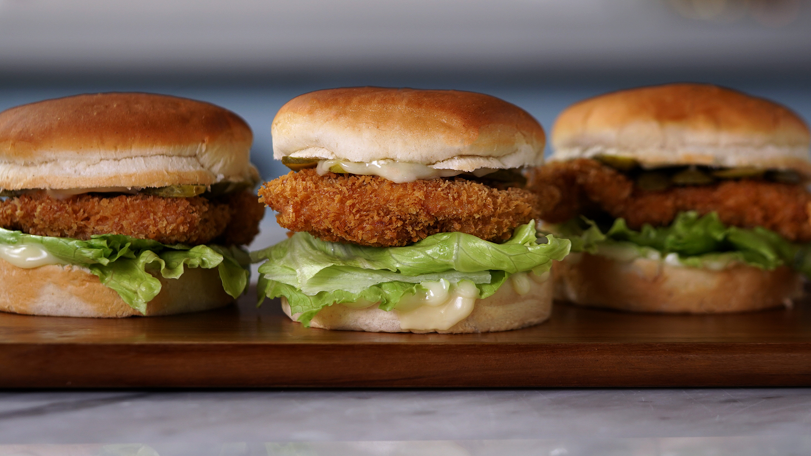
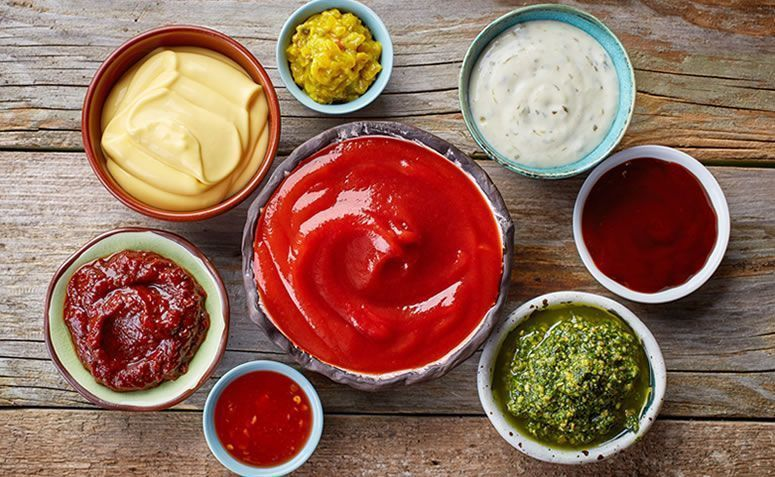

Sanduíche otimo para uma refeição pós treino, de simples preparo e sabor excelente. Boa fonte de proteínas, carboidratos e gorduras.
Ingredientes:
Peito de frango
Pão brioche
Queijo
Alface
Cereal de milho
Azeite
Sal
Creme de cebola
Tempero de alho
Ketchup
Maionese
Barbecue
Mostarda
Mel
Chimichurri
Lemon Pepper
Trigo
2 ovos

Modo de preparo - Frango
Comece cortando o frango na grossura um pouco menor que um dedo. Coloque os filés cortados em um recipiente e tempere com sal, creme de cebola, tempero de alho, lemon pepper,chimichurri e ketchup. Mexa e deixe o tempero marinando na carne por no minimo 10 minutos.
Separe 3 pratos. Em um coloque 100 gramas de trigo, 50 gramas de creme de cebola e misture bem. Em outro, coloque 200g de cereal de milho e quebre com as mãos. Em outro prato, quebre dois ovos e misture 10 gramas de molho barbecue.
Em outro prato separe o cereal de milho, bem quebrado e em outro bata 2 ovos.
Pegue o frango já temperado, passe no prato que contém o trigo e depois passe no prato com ovo batido, repita o processo duas vezes e termine molhando no ovo.
Com o frango umido, coloque sobre o cereal macetado dos dois lados. Passe um fio de azeite e leve para air frayer a 180 graus e vire quando o lado de cima estiver frito. Ao virar, passe outro fio de azeite.
Para o molho:
creme de cebola
alho em pó
lemon pepper
mel
barbecue
ketchup
maionese
mostarda
misture tudo.

Montagem - Pão
Coloque o pão na air frayer com uma fatia de queijo e deixe tostar